Profile Diri

Kartika
Hallo perkenalkan saya Kartika siswi SMAN 1 Rengasdengklok, saya lahir di Karawang 29 september 2006. Hobby saya menggambar, mendengarkan musik, membaca, dan menari
Pendidikan Formal
- SDN Sampalan 2
- SMPN 2 Kutawaluya
- SMAN 1 Rengasdengklok
Pendidikan Non Formal
- Mengikuti kegiatan Pramuka
- Mengikuti eskul Dance
Organisasi
Pencapaian SKU/TKU
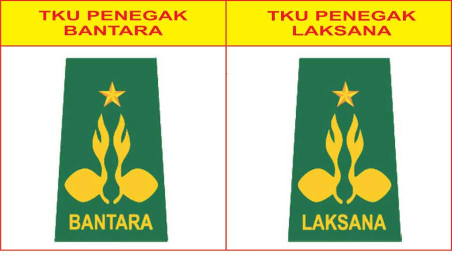
Pencapaian tingkat Penegak Bantara
pencapaian penegak Bantara


Pencapaian SKK/TKK

Dokumentasi pencapaian bidang-bidang TKK
Bidang agama, mental, moral, spiritual, pembentukan pribadi dan watak
dapat membaca surat dalam alquran

mengerjakan shalat sunnah, wajib, sholat idul fitri,dan idul adha, serta menyelenggarakan zikir dan doa sesudah shalat

Bidang patriotisme dan seni budaya
dapat memimpin pasukan/ambalannya untuk menyanyidssskan beberapa lagu nasional, daerah maupun pramuka yang menggunakan suara
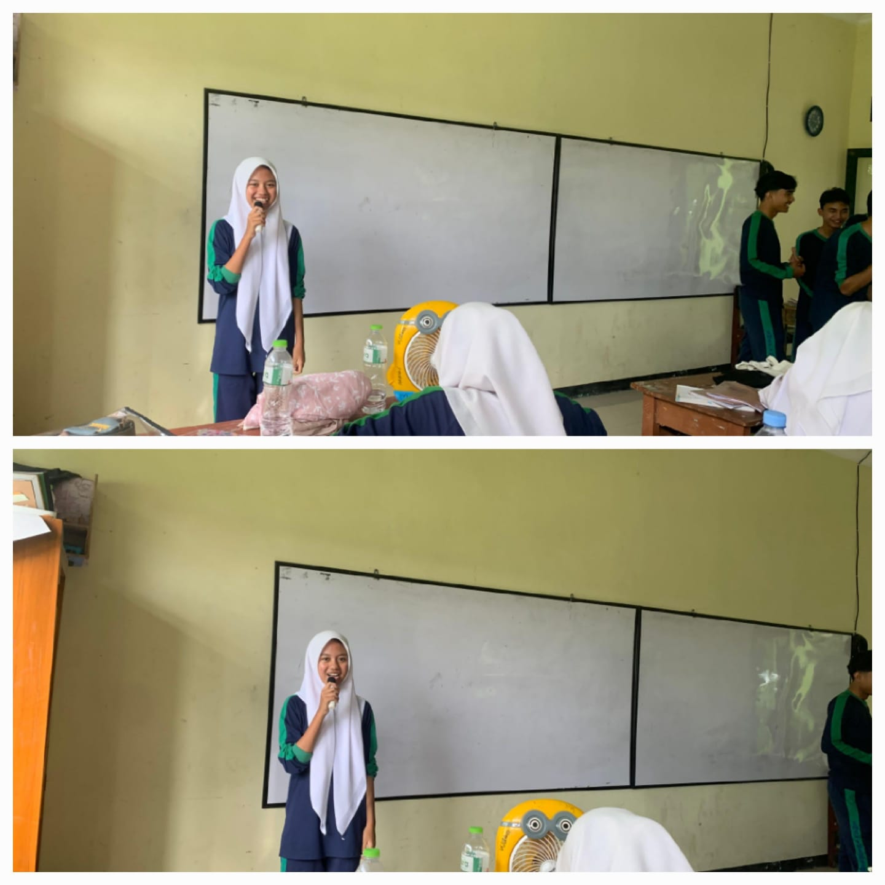
Bidang ketangkasan dan kesehatan
mengetahui cara dan dapat memperlihatkan praktek menolong orang yang tenggelam
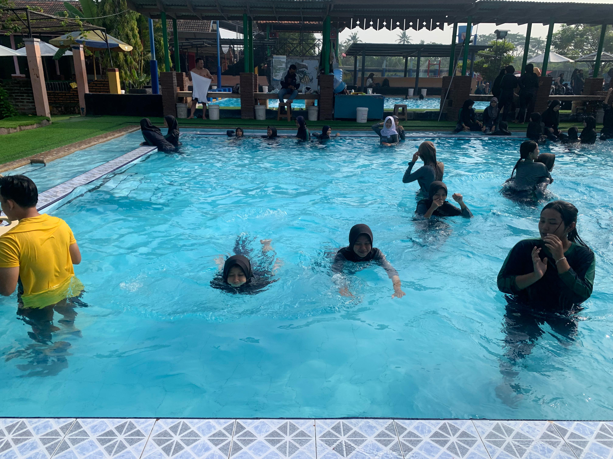
pernah mengikuti gerak jalan secara berkelompok atau perorangan sejauh 15km untuk putri

tahu keperluan berkemah untuk pasukan/ambalan, dan peraturan serta syarat-syarat perkemahan yang baik
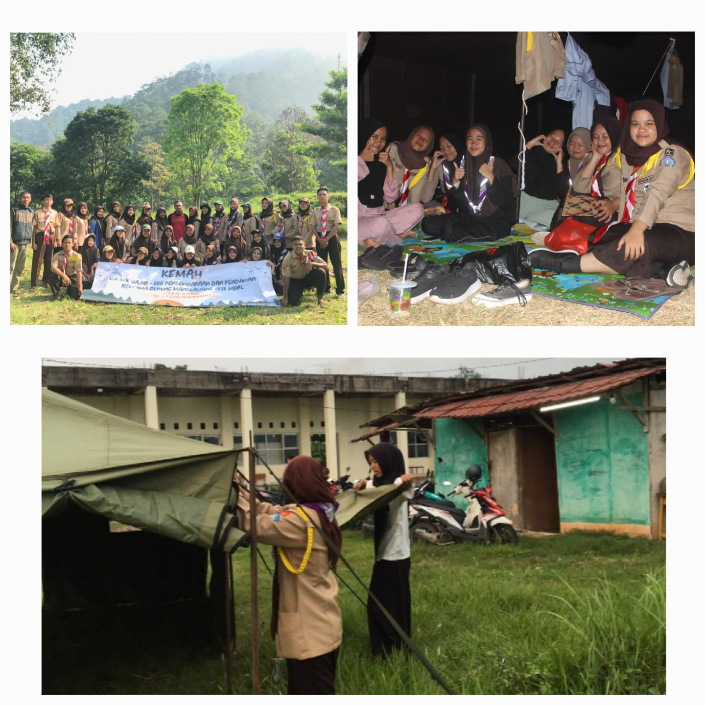
Bidang keterampilan dan teknik pembangunan
dapat menunjukkan hasil karya yang dapat di jual

dapat memotret obyek yang bergerak, bintang, maupun awan

dapat menjahit pakaian untuk sendiri
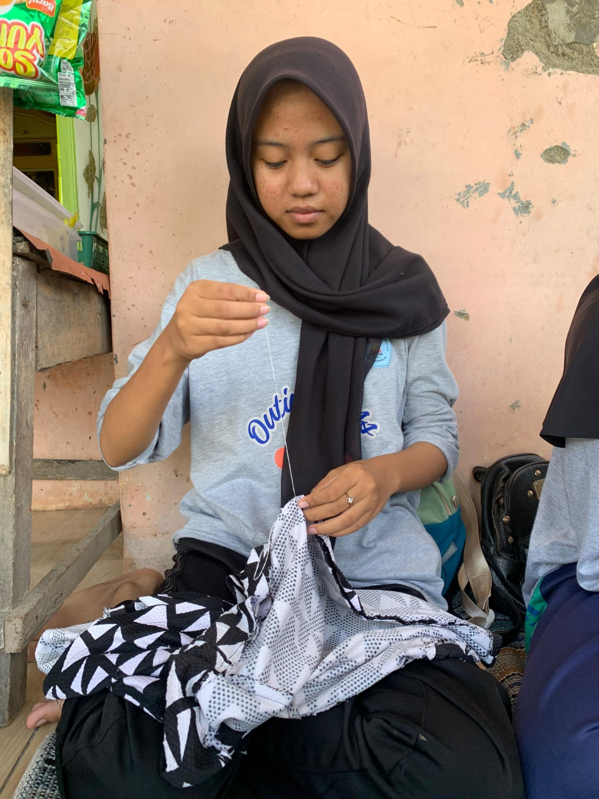
dapat menghidangkan masakan untuk lima orang yang terdiri dari nasi, satu jenis lauk, satu jenis hidangan pencuci mulut, dan minuman
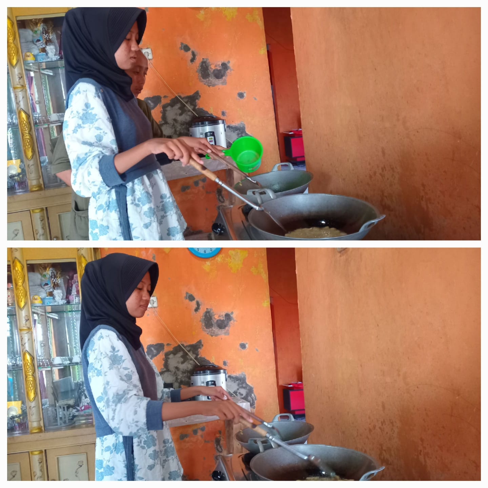
Bidang sosial, perikemansiaan, gotong-royong, ketertiban masyarakat, perdamaian dunia dan lingkngan hidup
membantu polisi lalu lintas melakukan pengamanan serta memeriksa tempat-tempat terjadinya suatu kecelakaan lalu lintas

membantu satpam dalam jalan yang akan di lintasi oleh murid

Keikutsertaan Kegiatan
Kegiatan PAM Lebaran/Karya Bakti Pramuka
dokumentasi kegiatan pam lebaran dan karya bakti pramuka
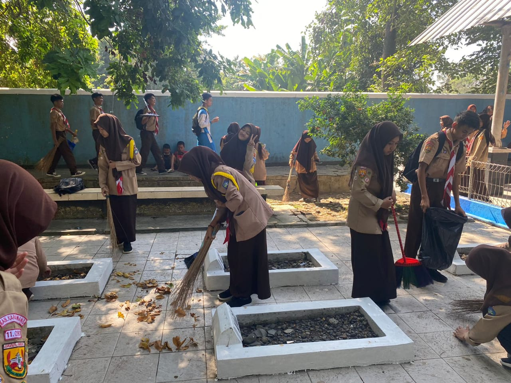
Kegiatan Jamboree On The Air (JOTA) dan Jamboree On Internet (JOTI)
dokumentasi kegiatan jota joti yang pernah saya ikuti, yang bertempat di karawang


Kegiatan Mendaki gunung manglayang
dokumentasi mendaki gunung manglayang
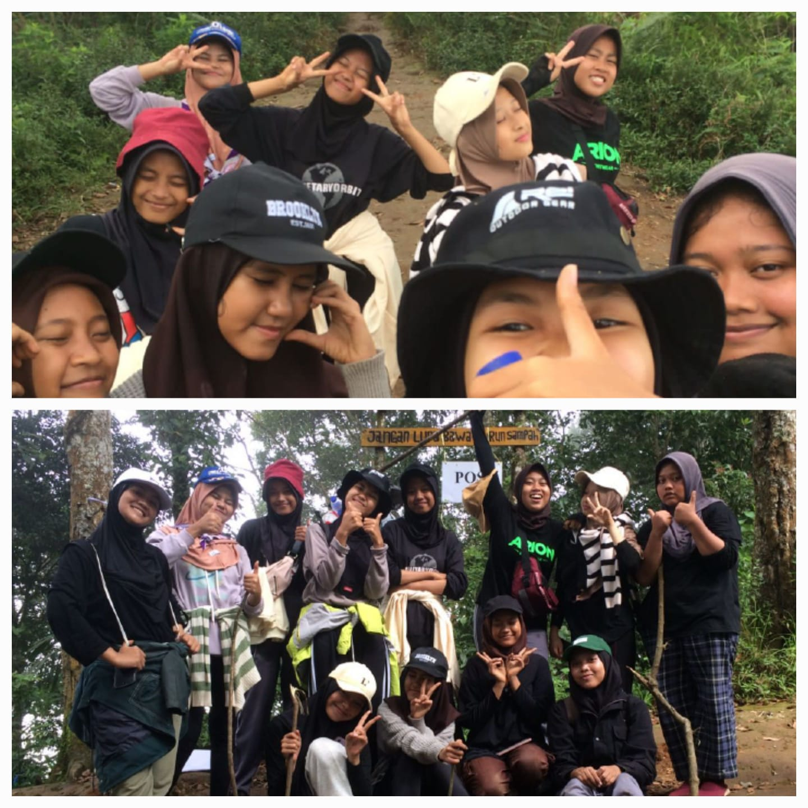
Legalitas
Telah Menyelesaikan Tingkatan akhir Pramuka Penegak


Telah Menyelesaikan tingkatan TKK pada 5 bidang kecakapan, mulai dari tingkat Purwa, Madya dan ada beberapa di tingkat Utama
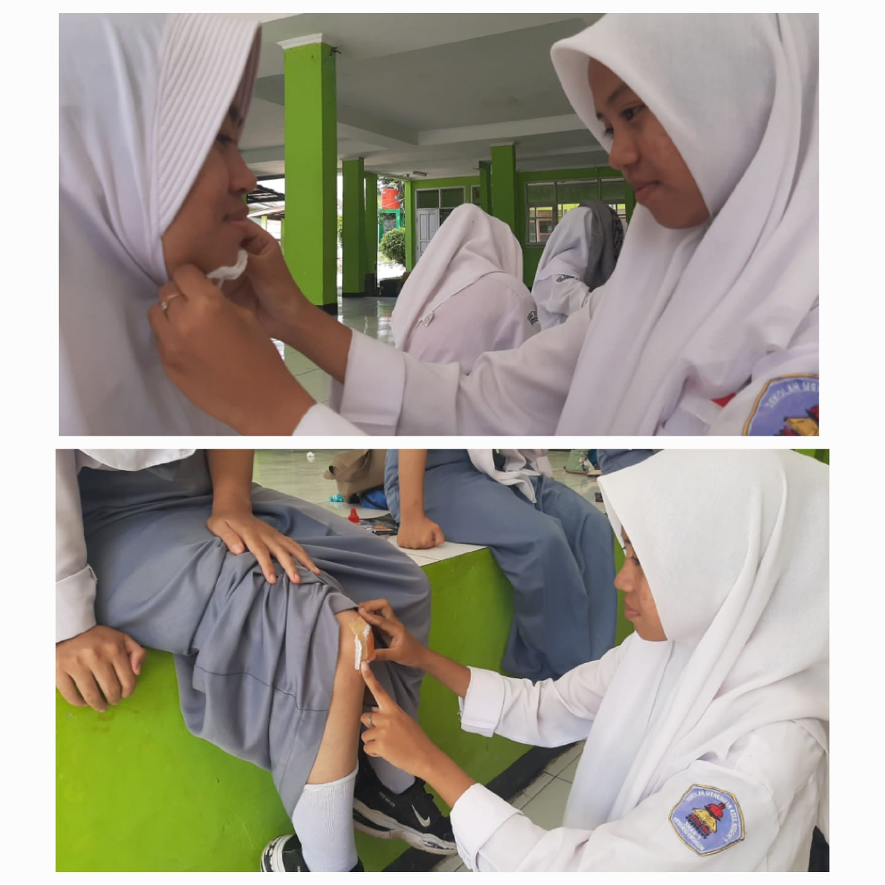
Project Produktif
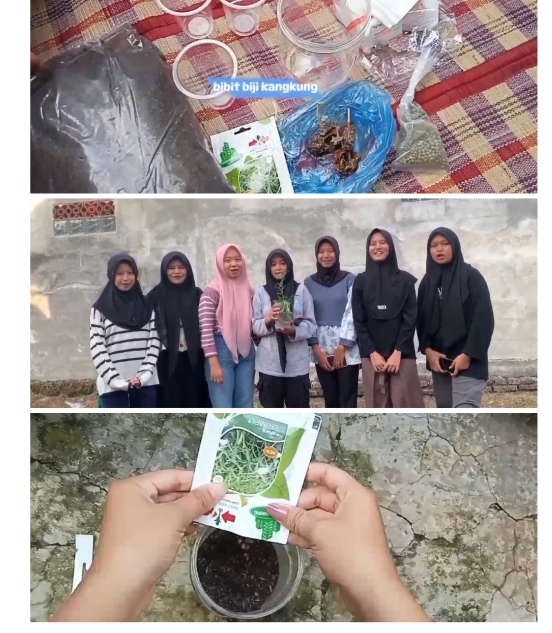
ini adalah bukti dokumen project produktif saya
video project produktif
Penguasaan bahasa asing
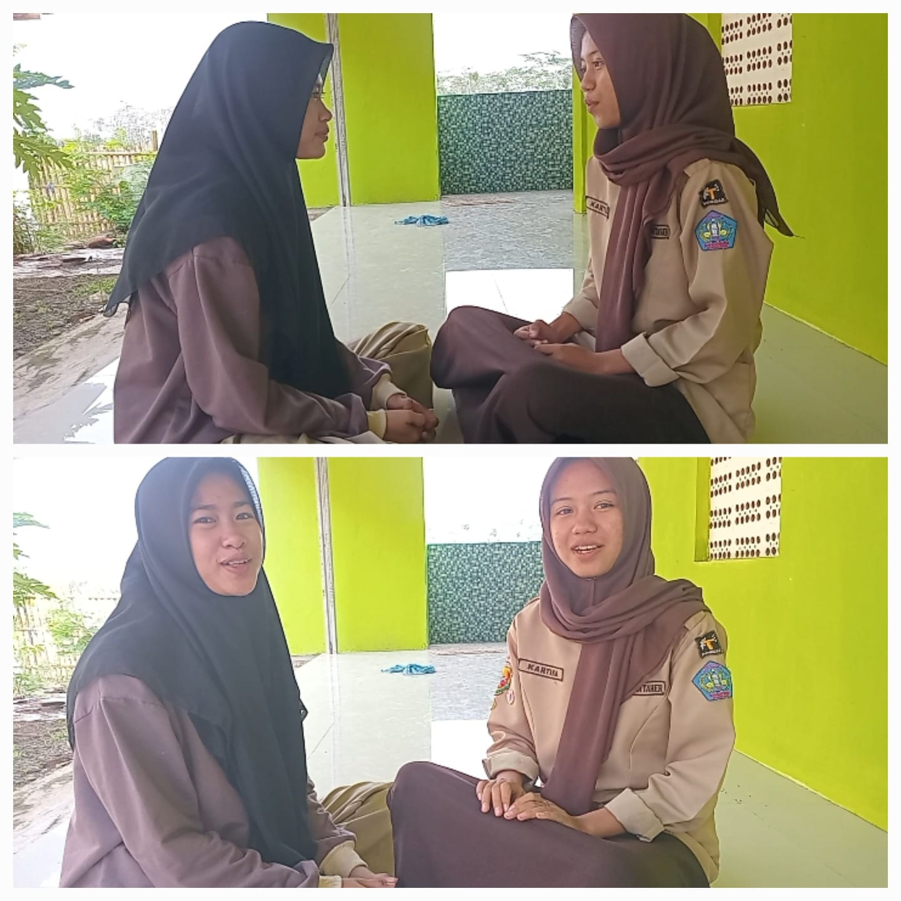
ini adalah video bahasa asing saya
video bahasa asing